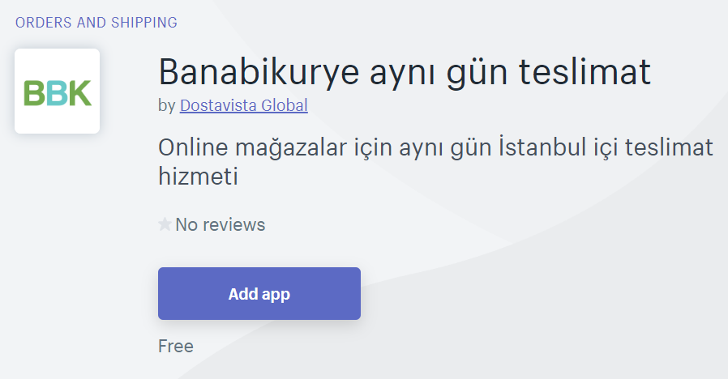
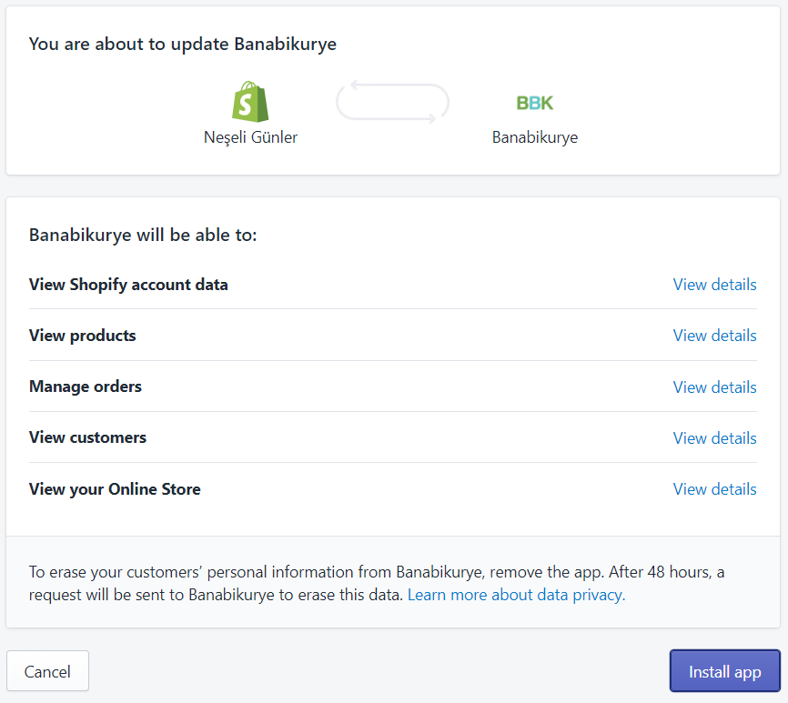
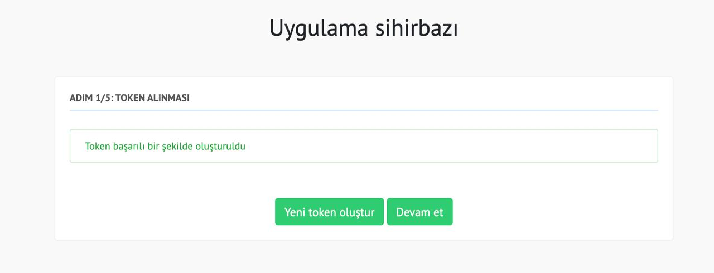
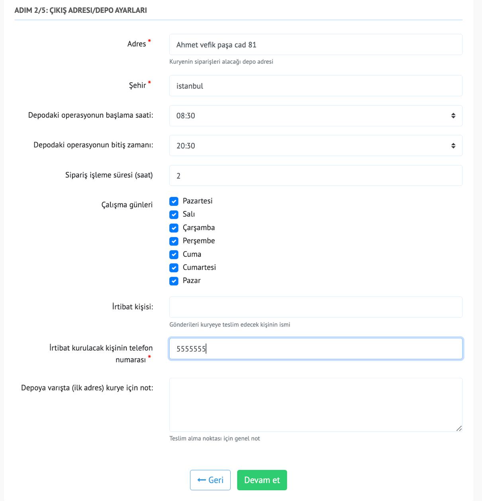
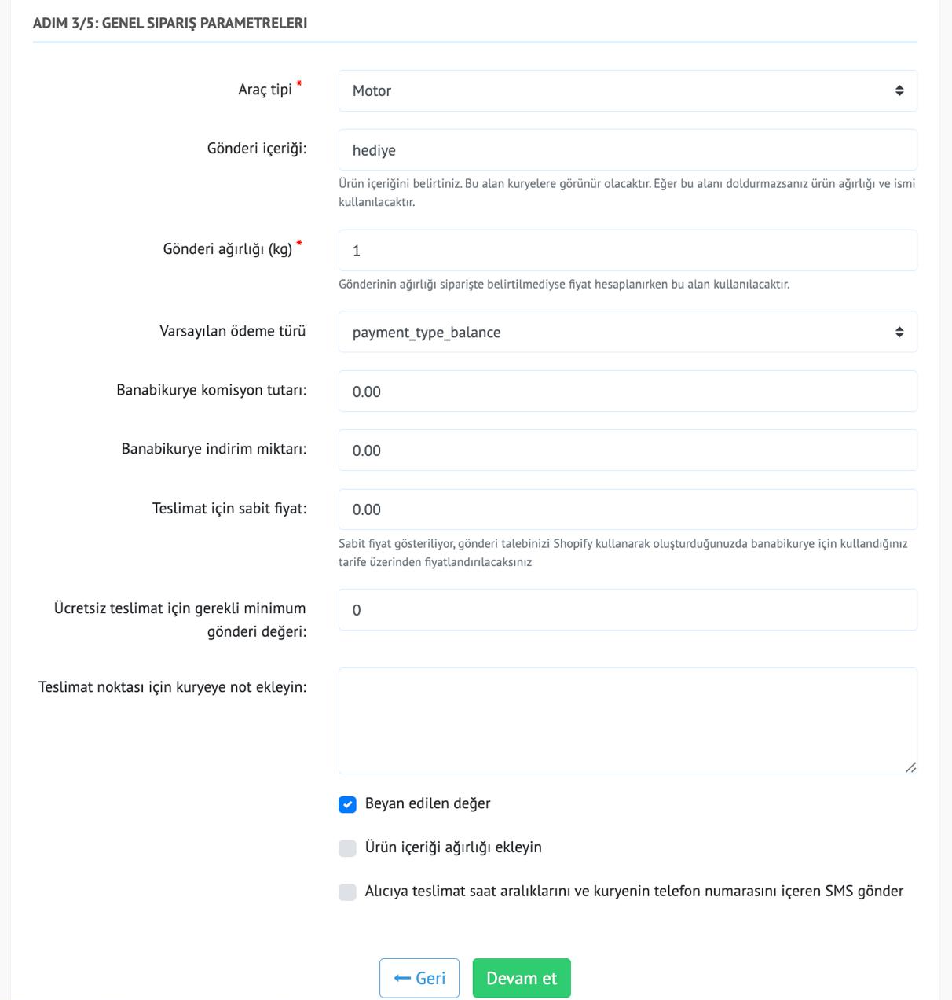
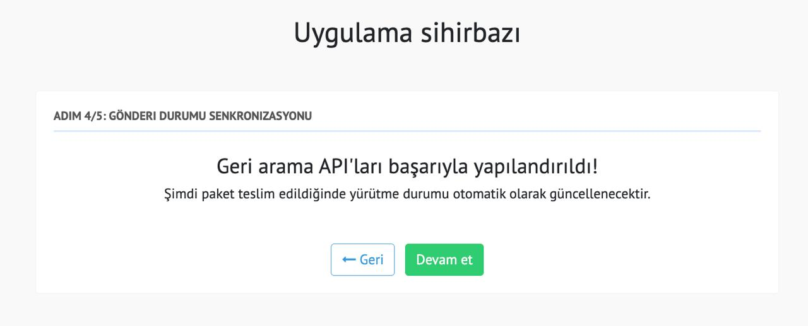

Shopify
Shopify mağazanızı BBK'ya bağlayın.
BBK uygulamasını Shopify mağazanıza ekleyin, depo bilgilerinizi tamamlayın ve sipariş durumlarını otomatik senkronize edin.
-
BBK Shopify uygulama sayfasını açın
Shopify mağazanızda uygulama ekleme akışına gidin ve BBK uygulamasını mağazanıza yükleyin.

Shopify uygulama sayfası üzerinden kurulumu başlatın. -
Uygulamayı mağazanıza ekleyin
Banabikurye uygulamasını Shopify mağazanıza indirerek kurulum sihirbazını açın.

Uygulama mağazaya eklendiğinde sihirbaz otomatik olarak devam eder. -
Bağlantı token'ını oluşturun
Uygulama sihirbazı bağlantı için gerekli token'ı otomatik oluşturur. İşlem başarılı olduğunda devam edin.

Token başarıyla oluşturulduktan sonra bir sonraki adıma geçebilirsiniz. -
Çıkış adresi ve depo bilgilerini girin
Adres, şehir, operasyon saatleri, çalışma günleri, irtibat kişisi, telefon ve kurye notunu tamamlayın.

Kurye teslim alma noktası için depo bilgilerini eksiksiz doldurun. -
Varsayılan teslimat ayarlarını belirleyin
Araç tipi, gönderi içeriği, ağırlık, ödeme türü, komisyon, indirim, sabit fiyat ve ücretsiz teslimat eşiğini ayarlayın.

Varsayılan gönderi ayarları daha sonra panelden değiştirilebilir. -
Sipariş durumu senkronizasyonunu açın
Kurulum tamamlandığında teslimat durumu Shopify siparişlerinize otomatik yansır.

Durum senkronizasyonu teslimat tamamlandığında Shopify siparişini günceller.